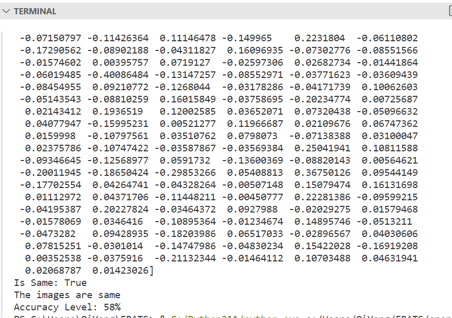
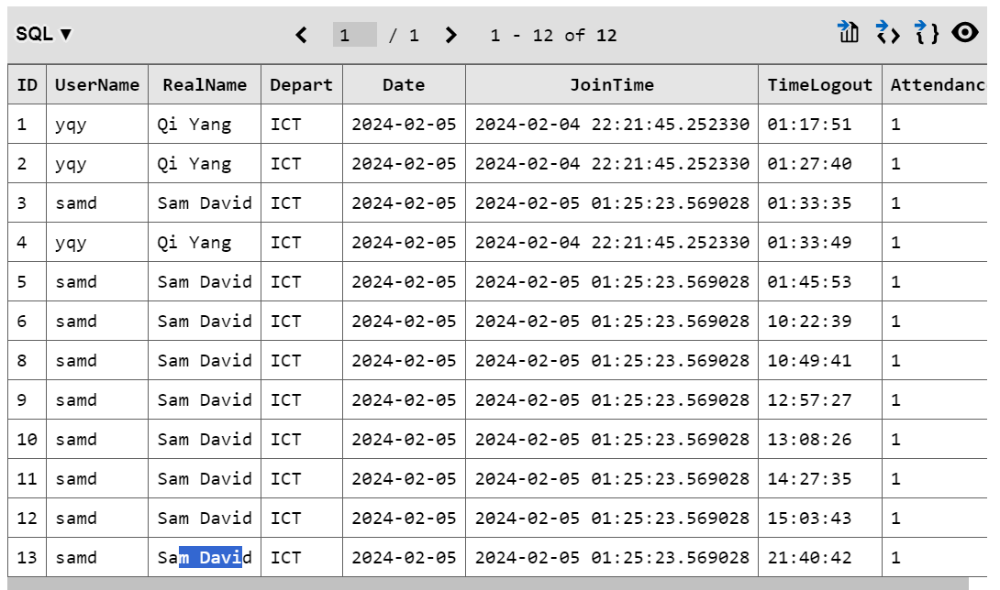
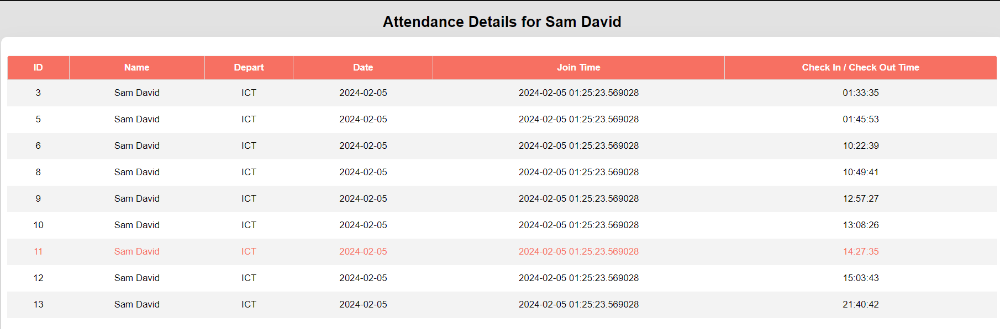

| week - 1 | week - 2 | week - 3 | week - 4 | week - 5 | week - 12 | week - 13 | week - 14 | week - 15 | week - 16 | |
For week 16 the last week of pfd, we need to finish the project and the OpenCV
code is finally working so now it is able to compared 2 imgs and give a result of is this 2 img showing
the same people. And What I need to do is to pull the img data from database and replace the 1 of the img
so that the opencv img can compared with the database img. And after a long time of hard work I managed to
make the thing work.

Next is if the opencv shows that it is the same person I need to insert the data to the new database table that
contains attendance information. The data contains things like name, time, date, department, attendance.....

After all data is writing to the database now I need to display the attendance data in the html page, which
was not easy especailly need to do this in limited time, after learning more about rows, array and some flask
related knowledge I managed to display the attendance data in the html page

Other than these things, I also managed to fix some bugs here and there like the login function I put a extra
code in the html page cause some bug and luckily managed to fond out and fix it. In overall this pfd Experience
is qutie special as I managed to try and learn many new things, work some something new and challenging but things
is a interesting experience.